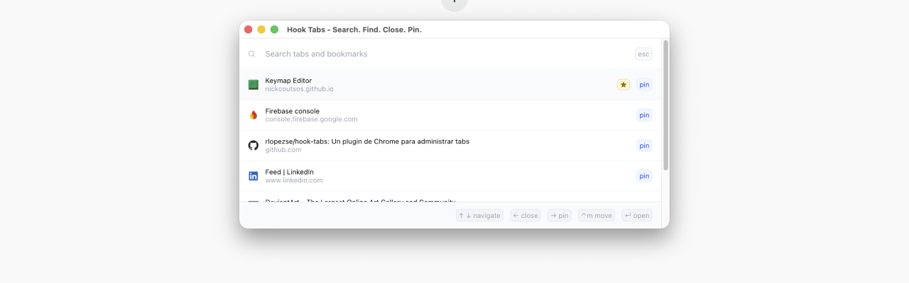
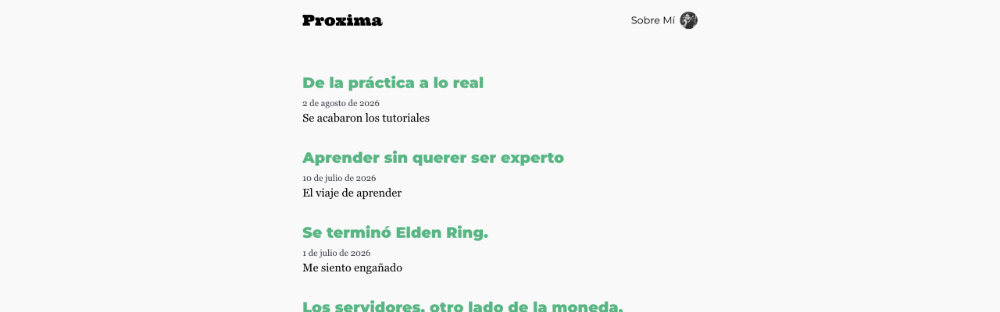
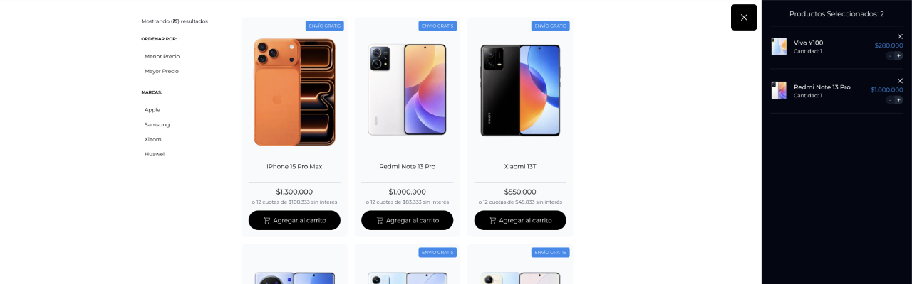

Hook Tabs es un proyecto personal que creé porque me cansé de tener que recorrer pestaña por pestaña para encontrar una en particular, o depender del mouse para hacerlo.
Soy un desarrollador de software con más de 10 años de experiencia construyendo productos digitales de alto tráfico. Me enfoco en transformar requerimientos de negocio en soluciones técnicas sólidas, cuidando la calidad del código, las métricas y la mejora continua.
Me integré como líder técnico a una célula de desarrollo de 3 personas trabajando sobre la App Mi Movistar (React Native). Coordiné al equipo, prioricé el backlog técnico y actué como puente entre las áreas de negocio y el equipo de desarrollo, asegurando la entrega de soluciones alineadas a los objetivos del producto.

Hook Tabs es un proyecto personal que creé porque me cansé de tener que recorrer pestaña por pestaña para encontrar una en particular, o depender del mouse para hacerlo.

Próxima es un blog personal que creé porque quería un espacio propio donde escribir, inspirado en el diseño minimalista de overreacted.io. Los posts los armo con ayuda de Claude Code: le paso una historia, me ayuda con el relato y yo termino de ajustarlo.

Pulsar es un proyecto personal que creé para explorar y refrescar conocimientos en React, TypeScript y CSS, armando un ecommerce Front-End desde cero.